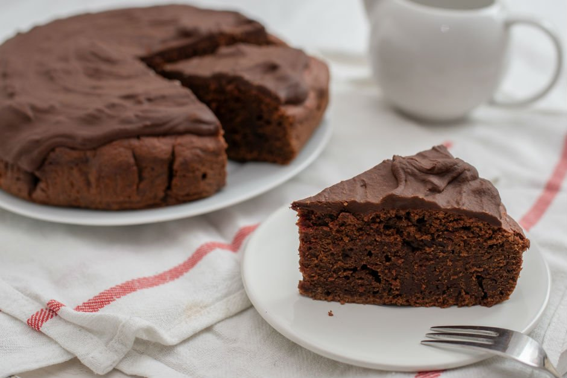

Kakaolu Şekersiz Kek
Tarif:Dyt.Esra Evren
Kaç Kişilik: 4-6 kişilik
Hazırlama Süresi: 10 dakika
Pişirme Süresi: 30 dakika
- 3 yumurta
- 2 su bardağı kuru dut (rondodan geçirin,toz haline getirin)
- 2 bardak tam buğday unu
- 2 tepeleme yemek kaşığı kakao
- 1 su bardağı su
- 3/4 bardak zeytinyağı
- 1 su bardağı süt
- Kabartma tozu , vanilin
- 2 su bardağı kuru dut rondodan geçirilip toz haline getirilir.
- Şeker yerine kullanılan toz kuru dut diğer malzemeler de eklenerek karıştırılır.
- En son vanilya ve kabartma tozu eklenir.
- Dilerseniz çikolata parçacıkları ekleyerek tarifi zenginleştirebilirsiniz.
- 180 derece fırında yarım saat pişirdikten sonra tüketebilirsiniz
Kakaolu Şekersiz Kek için Malzemeler
Kakaolu Şekersiz Kek Nasıl Yapılır ?
Afiyet olsun